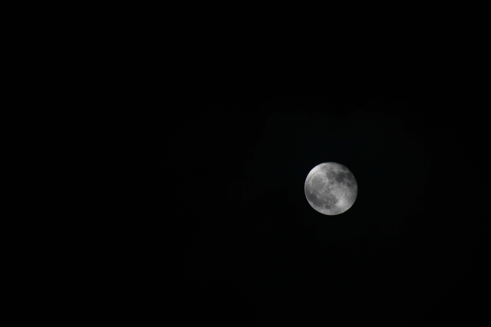

On the side, I am an ardent photography enthusiast. I love documenting special moments in wildlife, both flora and fauna, into memories to keep forever. There is nothing like capturing a bliss moment of tranquility, intimacy, or innocence. Photography challenges me to be more inquisitive and explore the world around me. Especially during quarantine, taking in these sights helped me destress after a long day of staring at a computer screen and remain grateful for the small things in life. Whether it is the insatiable desire to learn more about something that caught my eye or noticing the hidden beauty behind a subject for the first time, I believe that these lessons apply on a much deeper level beyond just the quick click of a camera. Furthermore, my favorite pastime has taught me the importance of patience yet also spontaneity, channeling my inner creativity, and viewing a siutation from many different perspectives. Here, you can find a sample with some of my shots. Enjoy!


